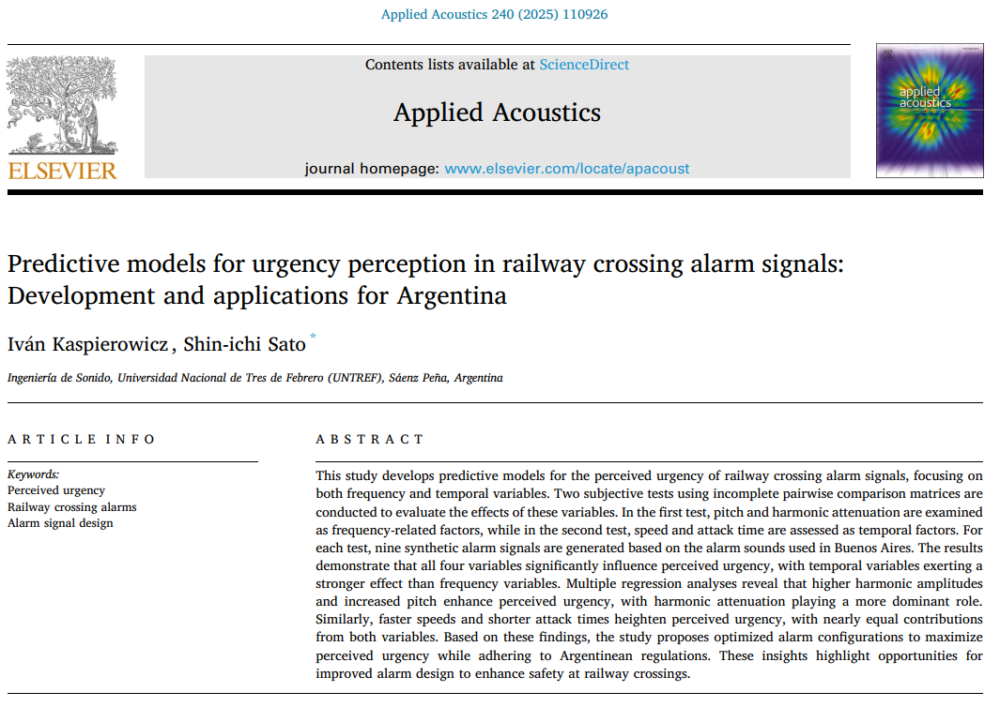

Thesis Work
Predictive models for urgency perception in railway crossing alarm signals: Development and applications for Argentina.
1Q - 2024
 Abstract: This study develops predictive models for the perceived
urgency of railway crossing alarm signals, focusing on both frequency and temporal variables. Two subjective tests using incomplete pairwise comparison
matrices were conducted to evaluate the influence of these variables. For each test, nine synthetic signals are generated based
on the alarm sound currently used in Buenos Aires. The results demonstrate that all four variables significantly affect perceived urgency, with temporal variables
contributing more to perceived urgency than frequency variables. Multiple regression analyses revealed that higher harmonic amplitude and pitch increase
perceived urgency, with harmonic attenuation having a greater impact. Similarly, faster speeds and shorter attack times heightened perceived urgency, with
nearly equal contributions from both variables. The study proposes specific alarm configurations to maximize perceived urgency in accordance with Argentinean
regulations. These findings suggest the potential for improved alarm design to enhance safety at railway crossings.
Abstract: This study develops predictive models for the perceived
urgency of railway crossing alarm signals, focusing on both frequency and temporal variables. Two subjective tests using incomplete pairwise comparison
matrices were conducted to evaluate the influence of these variables. For each test, nine synthetic signals are generated based
on the alarm sound currently used in Buenos Aires. The results demonstrate that all four variables significantly affect perceived urgency, with temporal variables
contributing more to perceived urgency than frequency variables. Multiple regression analyses revealed that higher harmonic amplitude and pitch increase
perceived urgency, with harmonic attenuation having a greater impact. Similarly, faster speeds and shorter attack times heightened perceived urgency, with
nearly equal contributions from both variables. The study proposes specific alarm configurations to maximize perceived urgency in accordance with Argentinean
regulations. These findings suggest the potential for improved alarm design to enhance safety at railway crossings.
Alarm signals serve as crucial indicators, alert individuals to situations requiring immediate attention They are ubiquitous across various environments, including as fire alarms, vehicles, schools, and public transit systems. This study focuses on railway crossing alarm signals, recognizing their vital role in ensuring safety at railway crossings. The statistical yearbook for 2022, released by the JST (Junta de Seguridad en el Transporte), revealed concerning data regarding railway crossings in Buenos Aires, underscoring the seriousness of incidents involving pedestrians, vehicles, and warning signals. A total of 357 pedestrian and 209 vehicle collisions were documented, shedding light on the persistent risk of accidents at railway crossings.
 A notable difference in perceived urgency was observed between recommended alarms with the minimum and maximum scale values, particularly concerning the temporal variables. These results encouraged us to continue working toward the publication of a summarized version of the thesis. In May 2025, our article titled “Development of Predictive Models for Urgency Perception in Alarm Signals at Railway Crossings in Argentina” was accepted for publication in the journal Applied Acoustics. This achievement represents a significant milestone in the dissemination of our findings and contributions to the field of applied acoustics. That same year, the UNTREF authorities selected our work to represent the Sound Engineering program in the engineering thesis competition organized by INVAP. Both recognitions stand as a testament to the effort and dedication invested in this research.